Índice
Introducción
Integra el método de envío PuntoPost en tu tienda WooCommerce para que tus clientes recojan sus pedidos en puntos de recogida cercanos. Incluye mapa interactivo, creación automática de paquetes, etiquetas QR, actualizaciones de estado y correos de notificación.
Requisitos
- WordPress 6.0 o superior
- WooCommerce 7.0 o superior
- PHP 7.4 o superior
- Permitir solicitudes salientes desde el servidor (para la API de PuntoPost)
Instalación
- En tu panel de WordPress ve a: Plugins > Añadir nuevo > Buscar plugins.
- Busca "PuntoPost" y haz clic en "Instalar ahora".
- Activa el plugin.
- Configura el método de envío.
Configuración
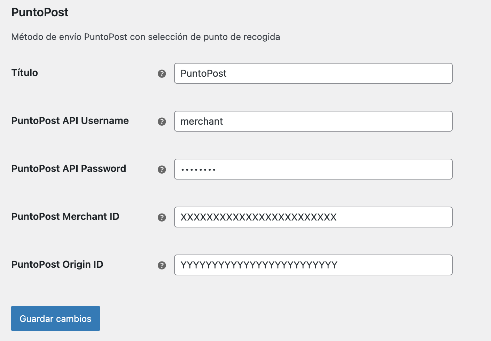
- Ve a WooCommerce > Ajustes > Envío > PuntoPost
- Completa los campos para configurar los datos del plugin:
- Título: nombre visible para el cliente en el checkout
- PuntoPost API Username (datos proporcionados por PuntoPost)
- PuntoPost API Password (datos proporcionados por PuntoPost)
- PuntoPost Merchant ID (datos proporcionados por PuntoPost)
- PuntoPost Origin ID (datos proporcionados por PuntoPost)
- Guarda los cambios. El plugin validará las credenciales con PuntoPost.
Notas: Si falta cualquier credencial, el método no se mostrará a los clientes.
Configuración de las zonas de envío
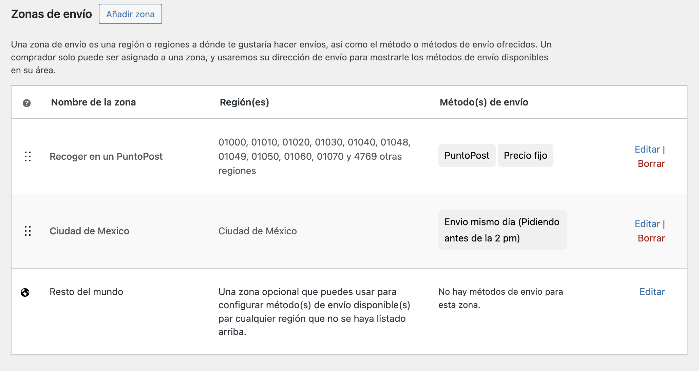
1. Ve a WooCommerce > Ajustes > Envío > Zonas de envío
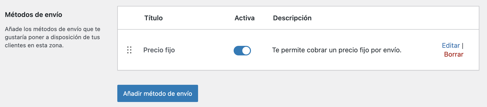
2. Edita la zona y haz clic en “Añadir método de envío”
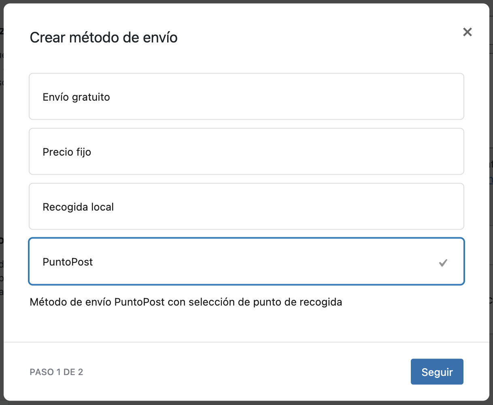
3. Selecciona el método de envío PuntoPost y haz clic en "Seguir"
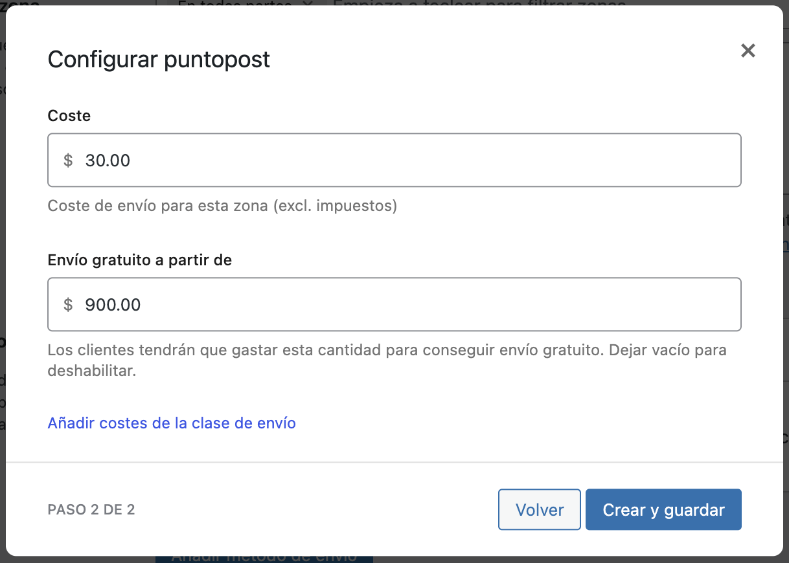
4. Indica el coste del envío para el usuario en la zona donde se está añadiendo el método de envío de PuntoPost. Si quieres ofrecer envío gratuito a partir de una cantidad determinada, indica la cantidad mínima para aplicar el envío gratuito.
Webhook
Para recibir actualizaciones de estado de los paquetes desde PuntoPost, se deberá configurar la cuenta de PuntoPost con la URL correspondiente (consulta con tu contacto de PuntoPost).
- URL: https://
/wp-json/puntopost/v1/webhook - Método: POST
El webhook actualiza los datos del paquete en el pedido y cambia el estado del pedido según corresponda.
Checkout
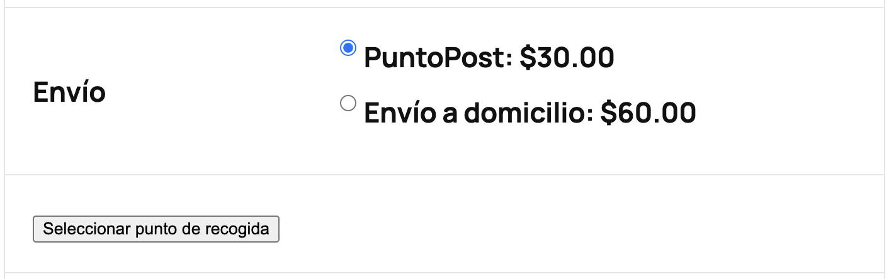
Una vez habilitado y configurado el plugin, al seleccionar el método de envío "PuntoPost" en el checkout, aparecerá un botón para elegir punto de recogida.
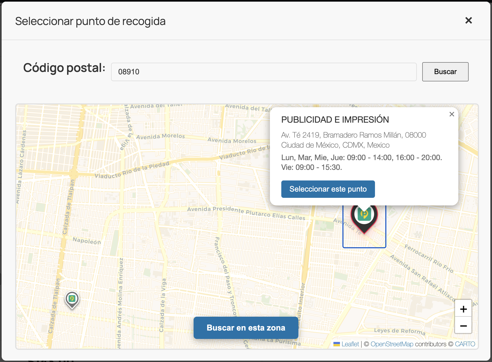
Al pulsar el botón se abrirá un mapa para buscar por código postal o por el área visible en el mapa.
Al seleccionar un punto, se mostrará el resumen y la selección quedará guardada en el pedido.
Flujo de pedido
1. El cliente realiza un pedido eligiendo PuntoPost y un punto de recogida.
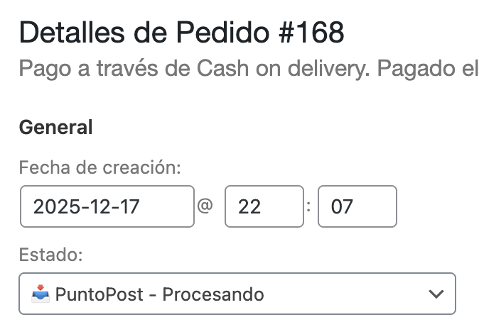
2. Al procesarse el pedido, el plugin crea automáticamente el paquete en PuntoPost y guarda en el pedido el ID y tracking del paquete.
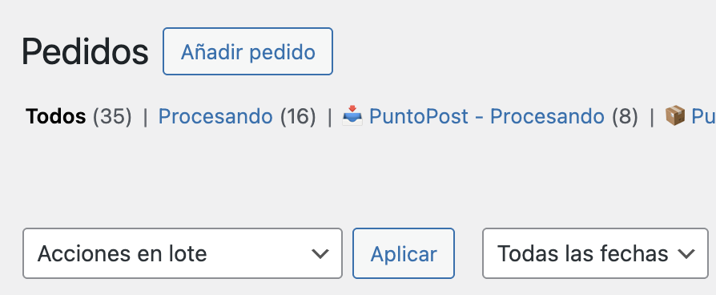
3. El pedido se marca con el estado “PuntoPost - Procesando” para que podamos filtrar los paquetes pendientes de preparar para PuntoPost.
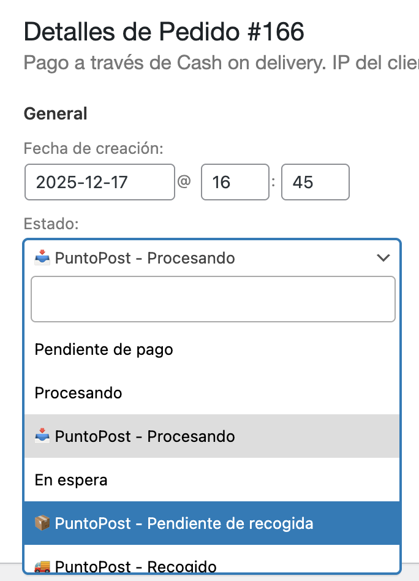
4. Una vez preparado el paquete del pedido, se deberá editar el pedido y marcarlo como "PuntoPost - Pendiente de recogida".
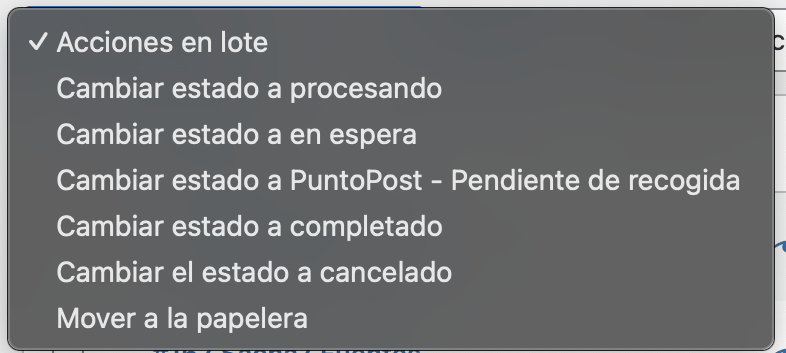
5. También se pueden marcar múltiples pedidos al mismo tiempo mediante las “Acciones en lote” desde el listado de Pedidos.
6. Desde el propio pedido se puede imprimir la etiqueta con el código QR que se debe adjuntar al exterior del paquete.
7. Una vez el paquete sea recogido por PuntoPost, el estado del pedido pasará automáticamente a “PuntoPost – Recogido”.
8. Una vez el paquete sea entregado por PuntoPost al punto de recogida, el comprador recibirá automáticamente un correo con las instrucciones para su recogida.
9. Una vez el paquete sea recogido por el comprador, el pedido pasará automáticamente a “Completado”.
10. En caso que el comprador no recoja el paquete en 7 días, este será devuelto automáticamente al almacén de origen.
Solución de problemas
El método no aparece en el checkout
- Verifica que WooCommerce esté activo y la zona de envío incluya el método
- Revisa que todas las credenciales de PuntoPost estén completas y válidas
- Asegúrate de que el cliente haya ingresado un código postal válido
Error al crear el paquete
- Revisa las notas del pedido para ver el mensaje de error
- Usa el botón de reintento o espera a los reintentos automáticos (cada hora, hasta 3 veces)
No llegan las notificaciones de estatus
- Verifica la configuración del webhook en PuntoPost (`/wp-json/puntopost/v1/webhook`)
- Confirma que tu sitio acepte solicitudes POST externas y no estén bloqueadas por firewall
El QR o la etiqueta no se muestran
- Verifica que el pedido tenga meta `_puntopost_qr` / `_puntopost_qr_label` con datos
- Intenta reimprimir desde la acción del pedido